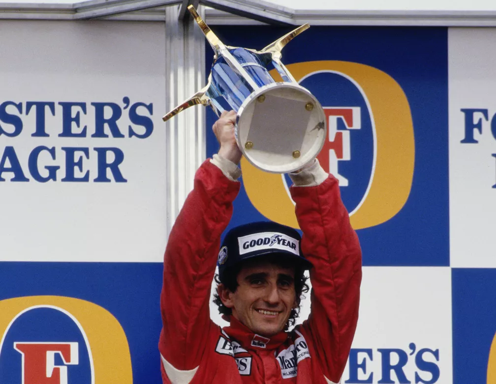

4-Juan Manuel Fangio (ARG)
Pentacampeão (1951, 54, 55, 56 e 57)
"Respeite quem pôde chegar onde a gente chegou". Este verso da excepcional música "Moleque Atrevido", composta por Jorge Aragão, resume muito bem como vejo o passado da Fórmula 1. Não dá para falar do presente da maior categoria do automobilismo sem reverenciar o passado. E Juan Manuel Fangio é o principal expoente do início da categoria. Mais importante que isso: em uma época em que os carros sequer tinham cinto de segurança e os capacetes eram feitos de couro, conseguiu estabelecer um recorde que demorou 45 anos para ser igualado - e 46 para ser batido. Tudo isso já com mais de 40 anos de idade na ocasião - o argentino é até hoje o campeão mais velho da história, com 46 anos, um mês e 11 dias no pentacampeonato, em 1957.
Aliás, para todo mundo que gosta de F1 e é mais novo, recomendo assistir a documentários sobre a vida do argentino, a corridas destes anos 1950 (existem algumas na internet) ou até mesmo a highlights (os famosos melhores momentos) delas. É outra época. Menos corridas, um risco absurdo a cada curva e muita coragem envolvida. Os pioneiros merecem muito respeito. Foram eles que pavimentaram o caminho para a Fórmula 1 ter o tamanho que tem hoje. E Fangio é o principal piloto dos anos 1950: é o único campeão por quatro construtores (Alfa Romeo, Maserati, Mercedes e Ferrari) e tem a maior média de vitórias (47,06%: 24 em 51 GPs). Tudo isso em apenas nove temporadas. Simplesmente incrível.
5-Alain Prost (FRA)

Tetracampeão (1985, 1986, 1989 e 1993)
Alain Prost é um dos pilotos que mais admiro na história da Fórmula 1. É muito fácil exaltar quem tem um estilo de pilotagem mais exuberante, com muito arrojo. É visualmente bonito, agradável plasticamente. Não era o caso do "Professor", como o próprio apelido sugere. O francês é o piloto mais objetivo e calculista da história da maior categoria do automobilismo. O cara que melhor entendeu a dinâmica de uma temporada pensando em conquistar títulos. Não hesitava em abrir mão de uma vitória impossível para conquistar um resultado plausível que agregasse positivamente no campeonato. E ainda assim, terminou a carreira com o recorde de vitórias até então: 51 em 199 GPs.
Mas o francês está tão bem colocado na minha lista não só por esses motivos. O principal deles, a meu ver, é a rivalidade com Ayrton Senna, a maior da história da F1. Senna só foi Senna por causa de Prost. E vice-versa. A disputa ferrenha potencializou o talento de ambos: o ódio mútuo naqueles anos fez com que eles se tornassem pilotos melhores. O brasileiro teve de desenvolver algumas valências que estavam na pilotagem do rival. E o francês fez o mesmo: agregou toques de agressividade a uma pilotagem já muito eficiente. Por coerência, se Senna está na segunda posição do meu ranking, é natural que Prost também esteja em um posto elevado. Dois gênios do automobilismo.
Tem dúvidas sobre o artigo?